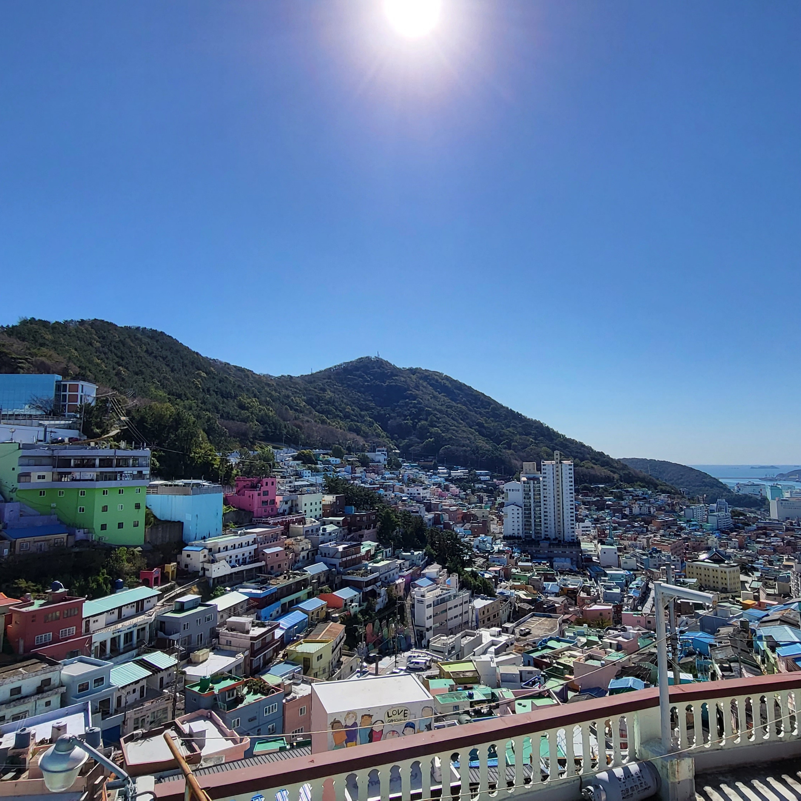
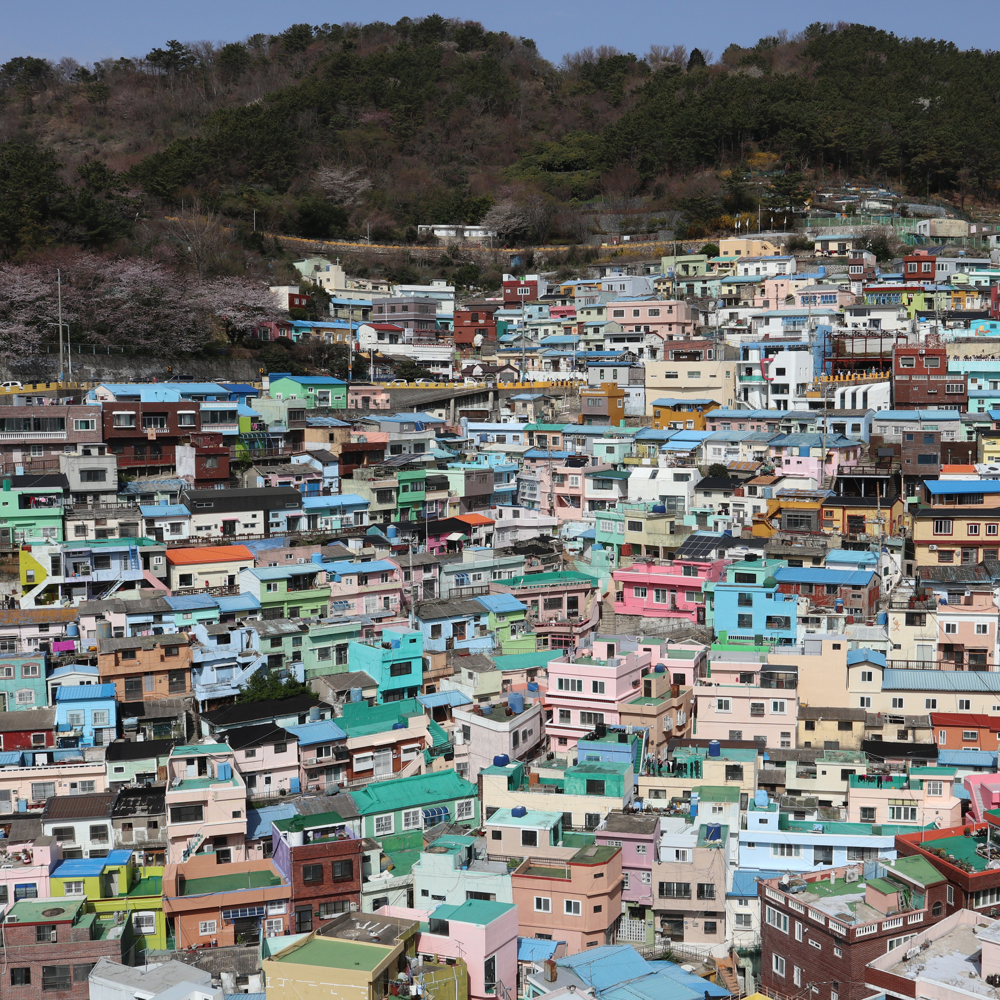
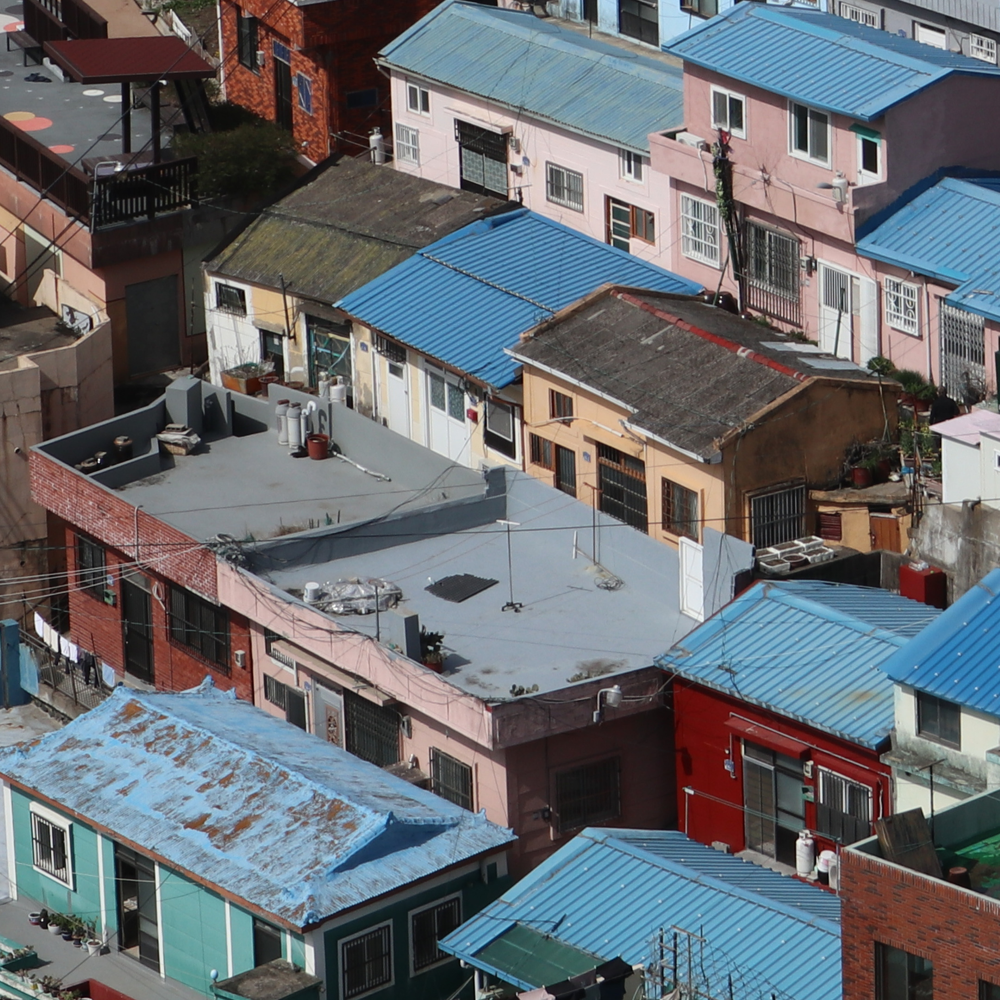
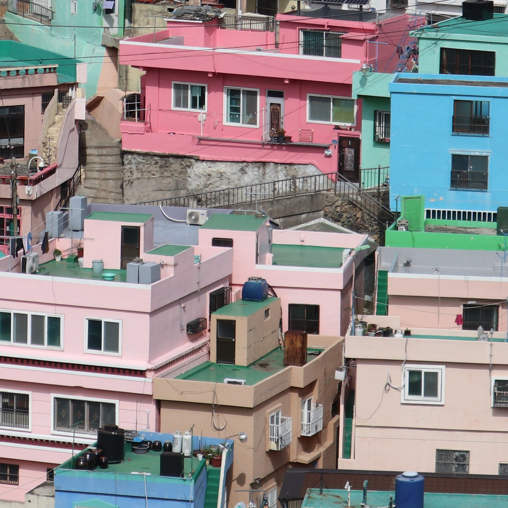

Photo: S h y numis / Wikimedia Commons · CC BY 4.0
Start at the top.
Walk down.
A private car and a day built around you.
www.sojournkorea.net/private-tour

Photo: VaneTrz20 / Wikimedia Commons · CC0
Busan's painted hillside — and the part the photographs leave out.

Photo: S h y numis / Wikimedia Commons · CC BY 4.0
It came from a 2009 village arts competition — not from anyone who lives here.

Photo: S h y numis / Wikimedia Commons · CC BY 4.0
People live in these alleys. Keep your voice down and stay out of the private lanes.

Photo: S h y numis / Wikimedia Commons · CC BY 4.0
There is no flat version of Gamcheon. Come ready to climb.
Photo: S h y numis / Wikimedia Commons · CC BY 4.0
A private car and a day built around you.
www.sojournkorea.net/private-tour